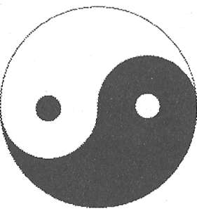

Materyalist realizmin antitezi idealist monizmdir. Bu felsefede temel olan şuurdur, madde değil. Hem madde dünyası ve hem de düşünce gibi zihinsel fenomenler dünyası, şuur tarafından belirlenir. Maddesel ve zihinsel kürelere (bunlar birlikte içkin -her yerde mevcut- gerçekliği ya da tezahürat alemini oluştururlar) ek olarak idealizm, maddesel ve zihinsel fenomenlerin kaynağı olarak aşkın, arşetipik bir idealar alemini öne sürer. İdealist monizmi, adının da ima ettiği gibi, üniter bir felsefe olarak tanımak önemlidir; içkin ve aşkın gibi herhangi bir alt bölümleme, şuur içindedir. Dolayısıyla şuur tek nihai gerçekliktir.
Batı'da, idealist monizm felsefesi en tesirli biçimde Eflatun tarafından, Devlet adlı eserinde ünlü mağara benzetmesiyle verilmiştir.1 Yüzlerce felsefe öğrencisi neslinin öğrendiği gibi, bu benzetme idealizmin temel kavramlarını net biçimde göstermektedir. Eflatun bir mağarada sabit bir konumda oturan ve yüzleri hep duvara bakan insanları tasavvur eder. Dışarıdaki büyük evren, mağaranın duvarına yansıyan bir gölge oyunudur ve biz insanlar da gölgeleri seyrederiz. Gerçeklik sandığımız gölge illüzyonlarını seyrederiz. Gerçek realite arkamızdadır, ışıkta ve duvara gölgeleri vuran arşetipik formlardadır. Bu benzetmede gölgeler, aşkın bir dünyaya ait arşetipik gerçekliğin insan deneyimindeki gerçek olmayan içkin tezahürlerini göstermektedir. Gerçekte, ışık tek gerçekliktir çünkü görebildiğimiz sadece ışıktır. İdealist monizmde şuur, Eflatun'un mağarasındaki ışık gibidir.
Aynı temel fikirler, birçok kültürün idealist literatüründe tekrar tekrar karşımıza çıkar. Hindistan'ın Vedanta literatüründe, Sanskritçe nama kelimesi aşkın arşetipleri ve rupa kelimesi de onların içkin biçimini anlatır. Nama ve rupa'nın ötesinde Brahman'ın, evrensel şuurun, ikincisi olmayan birin, tüm var olanların temelinin ışığı parlar. "Sözünü ettiğimiz ve düşündüğümüz tüm bu evren, Brahman'dan başka bir şey değildir. Brahman, Maya'nın (illüzyonun) ötesindedir. Başka da bir şey yoktur."2
Budist felsefede, madde ve idea alemleri sırasıyla Nirmanakaya ve Sambhogakaya diye adlandırılır; ama bunların ötesinde, her ikisini de aydınlatan tek şuurun ışığı, Dharmakaya vardır. Ve aslında, sadece Dharmakaya vardır. "Nirmanakaya, Buda'nın bedeninin ve onun anlaşılmaz faaliyetlerinin görünüşüdür. Sambhogakaya engin ve sınırsız potansiyele sahiptir. Buda'nın Dharmakaya'sı herhangi bir algılamadan veya bir biçimin tasavvurundan aridir (özgürdür)."
Belki de Taocu yin ve yang sembolü (Şekil 13) Hint

Şekil 13. Yin-yang sembolü
sembollerine göre daha yaygın biçimde tanıdıktır. Açık renkli yang, bir eril semboldür, aşkın alemi tanımlar ve koyu renkli yin, bir dişil sembol olarak görülür, içkin olanı tanımlar. Şekillerindeki ilişkiye dikkat edin. "Şimdi karanlık, şimdi aydınlık görünmesine izin veren Tao'dur"; onun tamamlayıcı tezahürlerini aşandır.
Benzer şekilde, Yahudi Kabala geleneği de iki gerçeklik düzenini tarif eder: Aşkın olan; ki Sefirot tarafından Teogoni olarak temsil edilir ve de içkin olan; alma de-peruda, "ayrılma dünyası"dır. Zohar'a göre: "Eğer kişi mistik meditasyonda eşya üstünde tefekküre dalarsa, her şey bir olarak açığa çıkar."
Hristiyan aleminde, aşkın ve içkin alemlerin adları -yer ve gök- gündelik söz dağarcığımızın bir parçasıdırlar. Ancak, günlük kullanışımız bu fikirlerin idealist monizmdeki kökenini dikkate almaz. Gök ve yer krallıklarının ötesinde, Tanrılık Katı, krallıkların Kralı vardır. Krallıklar, Kral'dan ayrı var olamazlar: Kral, krallıklardır. Hristiyan idealist Dionysius şöyle yazar: "O [şuur: varlığın temeli] zekalarımızın, canlarımızın ve bedenlerimizin içinde, göklerde ve yerdedir ama yine de Zatında aynı kalır. Aynı anda dünyanın içinde, çevresinde ve üstündedir; göksel üstü, elzemden elzemdir, bir güneş, bir yıldız, ateş, su, ruh, çiy, bulut, taş, kaya, var olan her şeydir."3
Tüm bu tariflerde, tek şuurun bize tamamlayıcı tezahürler yoluyla geldiğinin söylendiğine dikkat edin: İdealar ve biçimler, nama ve rupa, Sambhogakaya ve Nirmanakaya, yang ve yin, gök ve yer. Bu tamamlayıcı tarif, idealist felsefenin önemli bir yüzüdür.
Çevremize baktığımızda, normalde sadece maddeyi görürüz. Gök, sıradan algılayışımızın elle tutulur bir nesnesi değildir. Bu durum, sadece bizim maddeye gerçek olarak gönderme yapmamıza yol açmakla kalmaz, maddenin (ve diğer biçimi olan enerjinin) tek gerçeklik olabileceğini öne süren gerçekçi bir felsefeyi kabul etmemiz için bizi ikna eder. Ancak birçok idealist, kişi gündelik deneyimlerin ötesini hedeflediğinde gökleri doğrudan deneyimlemenin mümkün olduğunu ısrarla söylemektedir. Böyle iddialarda bulunan insanlar, mistik olarak bilinir. Mistisizm, idealist monizm için deneysel kanıtlar önermektedir.
Realizm (gerçekçilik), gündelik algılamalarımızdan ortaya çıkar. Dünyayı gündelik deneyimleyişlerimizde, eşyanın maddesel ve birbirinden ve bizden ayrı olduğunun kanıtları boldur.
Şüphesiz, zihinsel deneyimler böyle bir formülasyona tam olarak oturmaz. Düşünce gibi zihinsel deneyimler, maddesel görünmemektedirler; böylece zihin ve bedeni ayrı alemlere atayan düalist (ikilikçi) bir felsefe geliştirdik. Düalizmin eksiklikleri çok iyi bilinir. Başta, ayrı, maddesel olmayan bir zihnin nasıl olup da maddesel bir bedenle etkileştiğini açıklayamaz. Eğer böyle zihin-beden etkileşimleri varsa, o zaman iki alem arasında enerji alışverişi olmak zorundadır. Sayısız deneyde, madde dünyasının enerjisinin bizzat değişmez kaldığını görürüz (bu, enerjinin korunumu yasasıdır). Zihinsel alemden enerji kazanıldığını ya da oraya enerji verildiğini gösteren herhangi bir kanıt yoktur. Eğer bu iki alem arasında etkileşimler varsa, bu nasıl olmaktadır?
İdealistler, şuurun asli gerçeklik olduğu fikrini savunsalar ve dolayısıyla öznel, zihinsel deneyimlerimize değer verseler de şuurun zihin olduğunu önermemektedirler. (Dildeki karmaşadan sakının: Şuur, nispeten az kullanılan bir kelimedir. Zihin kelimesi ise sıklıkla şuuru belirtmek için kullanılır.Ama bu kitapta şuur ve zihin kavramları arasında ayrım yapmanız şarttır ve önemlidir.) Bunun yerine onlar, (bir top gibi) maddesel nesnelerin ve (hayali bir top gibi) zihinsel nesnelerin her ikisinin de şuurun nesneleri olduklarını önermektedirler. Bir deneyimde, ayrıca bir özne yani deneyimle- yen de vardır. Bu deneyimleyenin doğası nedir? İşte bu, idealist monizmde en çok önem taşıyan sorudur.
İdealist monizme göre, bir özne-nesne deneyiminde öznenin şuuru, tüm var olanların temeli olan şuurla aynıdır. Dolayısıyla, şuur birleştiricidir. Sadece bir "özne şuur" vardır ve bizler o şuuruzdur. Upanişadlar diye bilinen Hindu kutsal kitapları, "Sen o'sun!" der.
Peki öyleyse, niçin sıradan deneyimimizde bu kadar ayrık hissederiz? Mistik, bu ayrılığın illüzyon olduğunda ısrarlıdır. Eğer benliğimizin gerçek doğası üstünde derinden düşünecek olursak, tıpkı birçok çağın mistiğinin de bulduğu gibi, tüm çeşitliliğin arkasında tek şuurun olduğunu buluruz. Bu tek şuur/özne/ben birçok adla anılır. Hindular buna atman derler; Hristiyanlar buna Kutsal Ruh derler; Quaker mezhebinden olan Hristiyanlar ise içsel ışık; hangi isimle anılırsa anılsın, hepsi de bu tek şuurun deneyimlenmesinin, tahmin edilemez değerde olduğunda hemfikirler.
Budist mistikler sıklıkla bireyin ötesindeki şuura, yok- benlik diye gönderme yaparlar ve bu durum, şuuru tümden inkar edebilecek potansiyel bir karmaşaya yol açar. Ama Buda bu kavram kargaşasını açığa kavuşturmuştur: "Bir Doğmamış, Kaynaklanmamış, Yaratılmamış, Biçimlenmemiş vardır. Eğer bu Doğmamış, bu Kaynaklanmamış, bu Yaratılmamış, bu Biçimlenmemiş olmasaydı; doğmuşların, kaynaklanmışların, yaratılmışların, biçimlendirilmişlerin dünyasından kaçmak mümkün olmazdı. Ama bir Doğmamış, Kaynaklanmamış, Yaratılmamış, Biçimlenmemiş var olduğundan doğmuşların, kaynaklanmışların, yaratılmışların, biçimlendirilmişlerin dünyasından kaçmak mümkündür."4
O zaman mistikler, bu temel, çoklukta teklik gerçekliğine şahitlik eden insanlardır. Farklı kültürlerden ve ruhsal geleneklerden birkaç örnekleme, birliğin mistik yolla deneyimlenişinin yaygınlığına işaret etmektedir.5
On beşinci yüzyılda İtalya'da yaşayan Hristiyan mistik Cenovalı Catherine Adorna, bilgisini sade ve güzelce ifade etmişti: "Varlığım Tanrı'dır; sadece O'na dahil olduğum için değil, varlığımın gerçek dönüşümüyle de."6
Altıncı yüzyılda Çin'de yaşayan ve cahil bir köylü iken aniden aydınlanması Zen Budizminin kurulmasıyla sonuçlanan büyük Hui-Neng şöyle demişti: "Bizatihi doğamız Bu- da'dır ve bu doğadan ayrı, başka Buda yoktur."7
On ikinci yüzyılda yaşayan ve sufilerce şeyhlerin şeyhi diye hürmet edilen sufi mistik İbn-i Arabi şunları demişti: "Sen ne olmayı, ne de hala var oluşunu durdurursun. Sen O'sun, bu sınırlamaların biri olmaksızın. Derken kendi mevcudiyetini böylece bilirsen, o zaman Tanrı'yı bilirsin; eğer bilmezsen, bilmezsin."8
On dördüncü yüzyılda yaşayan ve muhtemelen Kabalacıların asli kaynak kitabı Zohar'ın yazarı olan Kabalacı Moses de Leon şöyle yazmıştı: "Tanrı... yaratılış eserini yürürlüğe koymaya karar verdiği tam o anda, O diye adlandırılır. Varlığının, Neşesinin ve Sevgisinin tam ifadesinde, olan ve böylece gönlün sebepleriyle algılanabilir hale gelen Tanrı... Sen diye adlandırılır. Ama Tanrı, Varlığının tamlığı vasıflarının son ve her şeyi kuşatan nihai ifadesini bulduğu en üstün tezahüründe... Ben diye adlandırılır."9Sekizinci yüzyılda yaşayan ve Tantrik Budizmi Tibet'e getirdiğine inanılan mistik Padmasambhava'ınn eşi olan karizmatik Yeshe Tsogyel bilgeliğini şöyle ifade etmişti: "Ama sen en sonunda beni keşfettiğinde, içeriden tek çıplak hakikat doğdu, Mutlak Farkındalık Evrene nüfuz etti."10
On üçüncü yüzyılda yaşayan Dominiken keşişi Meister Ekhart şunları yazmıştı: "Bu aydınlanma anında Tanrı'nın ve benim bir olduğumu algılıyorum. Sonra ne idiysem oyum, ve sonra ne azalır ne artarım çünkü artık her şeyi hareket ettiren hareket ettirilemez sebebim."11
Onuncu yüzyılda yaşayan sufi Hallac-ı Mansur şöyle açıklamıştı: "En el Hak! (Ben hakikatim!)"12
Sekizinci yüzyılda yaşayan Hindu mistik Shankara fark ettiklerini coşkuyla ifade etmişti: "Başlangıcı, eşi olmayan gerçekliğim. 'Ben' ve 'sen' ya da 'bu' ve 'şu' illüzyonunda hiçbir rolüm yok. Ben Brahman'ım, ikincisi olmayan bir, sonu olmayan mutluluk, ebedi, değişmez hakikat... Tüm varlıkların içinde, dışsal ve içsel tüm fenomenlerin temeli olan ruh olarak, saf şuur olarak mevcudum. Hem hoşlananım hem de hoşlanılan şey. Cehalet günlerimde, bu şeyleri kendimden ayrı olarak düşünmekteydim. Artık biliyorum ki Ben, Her Şeyim."13
Ve son olarak Nasıralı İsa şöyle demişti: "Babam ve Ben,biriz."14
Birlik deneyiminin değeri nedir? Mistik için bu deneyim sevgiyi, evrensel şefkati özgürleştiren ve kendi çabamızla edindiğimiz bölünmüşlük içinde yaşamanın bağlarından ve tutunduğumuz bağlılıkları telafi etmekten kurtaran varlıksal bir dönüşüme kapı açmaktır. (Özgürleşen bu varlığa, Sansk- ritçe moksha denir.)
İdealist felsefe, altta yatan gerçekliğin doğrudan dene- yimlenebilen yanını sürekli olarak vurgulayan mistiklerin deneyimlerinden ve yaratıcı sezgilerinden ortaya çıkmıştır. "Konuşulabilen Tao, mutlak Tao değildir," der Lao Tzu. Mistikler tüm öğretilerin ve metafizik yazıların, aym kendisinden ziyade ayı işaret eden parmaklar olarak görülmesi gerektiği uyarısında bulunurlar.
Lankavatara Sutra'nın bizlere hatırlattığı gibi: "Bu öğretiler sadece Asil bilgeliğe işaret eden bir parmaktır... Amaçları tüm insanların tefrik edici zihinleri için kılavuzluk etmek ve üstünde düşünülecek şeyler oluşturmaktır ama Hakikat'in kendisi değildirler; bu ancak kişinin en derin şuurunda kendi kendine idrak edilebilir."15
Ya da mistikler paradoksal tanımlamalara sığınınaktadırlar. İbn-i Arabi şöyle der: "O [şuur] ne oluşla ne olmayışla vasıflandırılabilir... Ne mevcuttur ne de mevcut değildir. Ne İlk ne de Son olduğu da söylenemez."16
Gerçekten de, aşkınlık gibi paradoksal bir kavram içerdiğinden idealist metafizik de paradoksal görülebilir. Aşkınlık nedir? Felsefe sadece neti, neti diyebilir; o değil, bu değil. Ama nedir peki? Felsefe sessiz kalır. Ya da Upanişadlar şöyle der: "O her şeyin içindedir/O her şeyin dışındadır."17
Aşkın alem içkin dünyanın içinde midir? Evet. İçkin dünyanın dışında mıdır? Evet. Gittikçe kafa karıştırıcı oluyor.
İdealist felsefe de, sıra "Ayrılmamış şuur kendisini özne- nesne gerçekliğine nasıl ayırır? Bir şuur nasıl bu kadar çok hale gelir?" gibi sorulara cevap vermeye gelince sessiz kalmaktadır. Dünyanın gözlemlenen çokluğunun bir illüzyon olduğunu söylemek, bizi pek tatmin etmemektedir.
Bu kitapta, idealist monizmin kuantum fiziği bakış açısından bilim için doğru felsefe olduğunu savunacağız. Bilim ve mistisizmin bütünleşmesi de mistisizm tarafından ortaya çıkartılan zor soruların bazılarını çözmeye yardımcı olur.Bilim ve mistisizmin bütünleşmesi çok da zor olmamalıdır. Ne de olsa, önemli bir benzerlik paylaşmaktalar: Her ikisi de teorik açıdan açıklanabilen ilkelerin ışığında yorumlanan deneysel verilerden doğup büyümüştü. Bilimde, teori hem verinin açıklanmasına hizmet eder hem de gelecekteki deneyler için kılavuz ve tahmin aracı olur. İdealist felsefe mistiklerin deneysel gözlemlerini açıklarken, diğer Hakikat arayıcıları için kılavuzluk eden yaratıcı bir teori gibi de görülebilir. Nihayetinde, bilim gibi mistisizm de evrensel bir girişim gibi görünmektedir. Mistisizmde dar fikirlilik yoktur. Dar fikirlilik, dinler mistik öğretileri insan kitlelerine daha kolay aktarılabilir hale getirmek üzere basitleştirdiklerinde devreye girmektedir.
Bir mistik hakikat'in anlayışına varmak için genellikle belirli bir yöntem keşfeder ve bunu uygular. Yöntemler ya da başka bir deyişle ruhsal yolların hem benzerlikleri hem de farklılıkları vardır. Mistik içgörünün yaygınlığının yanında ikincil kalan farklılıklar, mistiklerin öğretileri üzerine kurulan dinlerdeki farklılıklara katkıda bulunurlar. Örneğin Budizm Buda'nın öğretisinden, Yudaizm Musa'nın öğretisinden, Hristiyanlık İsa'nın öğretisinden, İslam ise Muhammed'in öğretisinden (Muhammed, Musa ve İsa'yı da içeren bir peygamber silsilesinin sonu olarak kabul edilmektedir) ve Taoculuk da Lao Tzu'nun öğretisinden gelişmiştir. Ancak istisnalar vardır. Hinduizm belirli bir öğreticinin öğretisi üstüne kurulu olmayıp, birçok yolları ve birçok öğretiyi kucaklamaktadır.
Mistisizm, nihai gerçeklik hakkındaki hakikati arayışı içerir ancak dinin işlevi bir parça farklıdır. Belirli bir mistiğin takipçileri (çoğunlukla da mistiğin ölümünden sonra) hakikati bireysel olarak aramanın herkese göre olmadığını fark ederler. Bölünmüş benliklerinin illüzyonunda kaybolmuş ve onun peşinden koşmakla meşgul olan çoğu insan, hakikati kendi başlarına keşfetmeye motive olmazlar. Peki o zaman mistiğin idrak ettiklerinin ışığı bu insanlarla nasıl paylaşılacaktır?
Cevap: Basitleştirerek. Takipçiler, ortalama insan için erişilebilir kılmak amacıyla hakikati basitleştirirler. Böyle bir insan genellikle günlük yaşamın talepleri arasında sıkışıp kalmıştır. Aşkınlığın inceliğini anlamak için gerekli olan zaman ve kendini adayış azlığından dolayı, doğrudan mistik deneyimin önemini takdir edemez. Böylece, mistiğin hakikatinin takipçileri birleştirici şuurun doğrudan deneyimlenmesi yerine Tanrı fikrini koyarlar. Ne yazık ki, içkin dünyanın aşkın yaratıcısı olan Tanrı, sıradan insanın zihninde yeni bir role, Gök'ten aşağıdaki Dünya'yı yöneten kudretli bir kralın düalist imgesine büründürülür. Mistiğin mesajı kaçınılmaz biçimde sulandırılmış ve çarpıtılmıştır.
Mistiğin iyi niyetli takipçileri hiç de farkında olmaksızın şu eski fıkradaki şeytanın rolünü oynarlar: Tanrı ve şeytan birlikte yürürlerken, Tanrı eğilip yerden bir kağıt parçası alır. "Ne yazıyor?" diye sorar şeytan. Tanrı "Hakikat," der sakince. Şeytan hevesle cevap verir: "Bana ver. Ben onu senin için kurumsallaştırırım."
Yine de, örgütlenmenin zorluklarına ve yanılma paylarına rağmen, dinler mistiklerin mesajının ruhunu aktarmaktadırlar; dinlere canlılıklarını veren budur. Hem zaten, mistikler için Gerçekliğin aşkın doğasını idrak etmenin değeri, sevgi gibi erdemlerin böyle basit hale geldiği bir varlık modunda güvenli hale geçmiş olmalarıdır. Tek bir şuur varken ve siz ve diğerlerinin aslında ayrı olmadığını bilirken nasıl sevemezsiniz ki?Ama kişi, başkalarını sevmek üzere birliği idrak etmemiş sıradan bir kişiyi nasıl motive eder? Mistik, aşkın birliği bilmeyişin sevmeye engel olduğunu açıkça görmektedir. Sevginin yokluğunun net etkisi, ıstıraptır. Istıraptan kaçınmak için, der mistik, içe dönmeli ve kendimizi gerçekleştirme yolculuğuna koyulmalıyız. Dinsel bağlamda bu öğreti, şu hükme tercüme edilir: Eğer kendimizi kurtarmak (kefaret etmek) istiyorsak, yaşamımızda en üstün değer olan Tanrı'ya dönmeliyiz. Bu kefaretin yöntemi, orijinal öğretiye dayanan ve o belirli dinin ahlaki kodunu biçimlendiren bir uygulamalar takımıdır: on emir, Hristiyan ahlakının Altın Kuralı, Budist emirler, Kuran hükümleri, Talmud yasaları vb.
Şüphesiz, tüm dinler Tanrı kavramını öne sürmüş değillerdir. Örneğin Budizmde Tanrı kavramı hiç yoktur. Öte yandan, Hinduizmde birçok tanrı vardır. Bu örneklerde bile, dinlerin ele aldıkları (yukarıda anlatmıştık) açıkça bellidir. Böylece tüm egzoterik (dışrak) dinlerin üç ortak unsura sahip olduğunu görebiliriz:
1.Tüm dinler, bulunduğumuz halde bir yanlışlık olduğu öner
mesiyle başlarlar. Bu yanlışlık cehalet, ilk günah, kötülük veya sadece ıstırap gibi değişik biçimlerde adlandırılır.
2.Tüm dinler, sağladıkları "yol" izlendiği takdirde bu yanlışlıktan kaçışı vaat ederler. Kaçış; kurtuluş, dünyadaki ıstırap çarkından özgürleşme, aydınlanma, Tanrı'nın krallığında ebedi yaşam, cennet gibi değişik biçimlerde adlandırılır.
3.Yol, dinin belirli bir etik ve toplumsal kurallar bütününe uyan takipçilerinin biçimlendirdiği cemaate ve dine sığınınayı içerir.
Aşkınlığın ezoterik (içrek) öğretisinin üzerinde nasıl uzlaşılacağı bir yana bırakılırsa, çeşitli dinlerin birbirine göre gösterdiği farklılıklar bu etik ve toplumsal kurallar bütünündedir.18
İlk önermedeki düalizme dikkat edin: Yanlış ve doğru (ya da kötü ve iyi). Mistik yolculuk, bunun tam tersine, iyi ve kötü de dahil tüm düaliteleri aşmayı içermektedir. Ayrıca ikinci önermenin ruhban smı£ tarafından havuca ve sopaya dönüştürüldüğüne de dikkat edin: cennet ve cehennem. Öte yandan, mistisizm cennet ve cehennem diye ayrım yapmaz; her ikisi de nasıl yaşadığımızın doğal sonuçlarıdır.
Görebileceğiniz gibi, dünya dinlerinin süzgecinden geçtiğinde, idealist monizmin birciliği daha muğlak hale gelir ve düalist (ikici) fikirler baskın olur. Doğu'da, mistisizm öğrencilerinin sonu gelmez arzı sayesinde, ezoterik formdaki idealist monizm, ona aşina olan halk arasında saygınlığa sahiptir. Ancak Batı'da, mistisizmin nispeten az etkisi vardır. Yahu- di-Hristiyan tek tanrılı dinlerinin düalizmi, halkın psişesinde baskındır ve yorumlayıcıların güçlü hiyerarşisi ile de desteklenmektedir. Ancak tıpkı zihin-beden düalizmindeki gibi, Tanrı ve dünya düalizmi bilimsel sorgulamanın gözünden kaçmamaktadır.19 Bilimsel veriler dinin altını oydukça, kurunun yanında yaşı da yakma eğilimi görülür: Yaş olan, dinin öğrettiği ahlak ve değerlerdir; geçerliliği ve yararlılığı olmaya devam eden ahlak ve değerler.
Düalist dinlerin mantıksızlığını açığa çıkarmak, materyalist realizmin monistik felsefesiyle sonuçlanmaz. Görmüş olduğumuz gibi, alternatif bir monizm de mevcuttur. Kuantum fiziğinin materyalist realizmi toz duman etme biçiminden bakıldığında, idealist monizm tek geçerli monistik realizm felsefesi olabilir. Diğer seçenek ise metafizikten tamamen vazgeçmektir, ki felsefenin yönü bir süre buna yönelikti. Eğilim artık geriye dönüyor gibi görünmektedir.
Şimdi hayati soruyla yüzleşelim: Bilim, idealist monizmle uyumlu mudur? Eğer değilse, bilim yaparken metafiziği terk etmemiz gerekir; bu da gittikçe büyüyen inanç bunalımına katkıda bulunmak demektir. Eğer evet dersek, bilimi, felsefenin taleplerine göre yeniden formüle etmemiz gerekmektedir. Bu kitapta, idealist monizmin kuantum fiziği ile uyumlu olmakla kalmayıp, onun yorumlanması için de elzem olduğunu savunmaktayız. Yeni fiziğin paradoksları, bunları idealist monizmin bakış açısı altında incelediğimizde ortadan kalkmaktadırlar. Dahası, kuantum fiziği ile idealist monizmin birleşimi, mistisizmin aşkınlık ve çokluk gibi paradokslarından bazılarını da çözebileceğimiz güçlü bir paradigmayı (modeli) bize sağlamaktadır. Çalışmamız, idealist bir bilimin başlangıcını ve dinlerin yeniden canlandırılmasını işaret etmektedir.
Kuantum nesneleri için idealist metafizik
Kuantum nesneleri dalga ve parçacık gibi tamamlayıcı özellikler göstermektedirler. Kuantum tamamlayıcılığı, dalga-parçacık düalitesinin çözümü, idealist monizmin tamamlayıcılığıyla aynı mıdır?
Yazar George Leonard'ın The Silent Pulse (Sessiz Nabız) adlı eserinde şu satırları yazarken iki tip tamamlayıcılık arasında bir parallellik gördüğü açıktır: "Kuantum mekaniği, günümüzün en son koanıdır." Koanlar, Zen Budistlerinin görünüşteki paradokslara aşkın çözümler bulmada kullandıkları araçlardır. Gelin, koanları tamamlayıcılıkla kıyaslayalım.
Bir koanda, Zen öğrencisi Daibai, Zen ustası Baso'ya "Buda nedir?" diye sorar. Baso cevap verir: "Bu zihin Bu- da'dır." Bir başka keşiş "Buda nedir?" diye aynı soruyu sorduğunda ise Baso cevap verir: "Bu zihin Buda değildir."
Şimdi bunu, Bohr'un tamamlayıcılık ilkesiyle karşılaştıralım. Bohr'a "Elektron bir parçacık mıdır?" diye soralım.
Bohr bazen "Öyledir," diyecektir. Bir bulut odasında bir elektronun izine baktığınızda, bir elektronun bir parçacık olduğunu söylemek anlamlıdır. Ancak elektronların kırınım desenine bakan Bohr, ağzındaki pipoyu çekiştirerek, "Bir elektronun bir dalga olduğu konusunda hemfikir olmanız gerek," diyecektir. Öyle görünüyor ki, Zen ustası Baso gibi Bohr da elektronların doğası hakkında iki fikre birden sahiptir.
Kuantum dalgaları, olasılık dalgalarıdır. Kırınım deseninde olduğu gibi, dalga özelliğini görebilmek için birçok dalga-parçayla deney yapmamız gerekir. Tek bir kuantum nesnenin dalga özelliğini deneysel olarak asla ama asla göremeyiz; tek bir dalga-parça kendisini her zaman yeri belli, lokalize bir parçacık olarak gösterir. Dalga özelliği yine de tek bir dalga-parça için bile devam eder. Tek bir dalga-parçanın dalga özelliği, sıradan uzay (mekan) içinde asla tezahür etmediğine göre, aşkın uzayda mı mevcuttur? Bohr'un tamamlayıcılık fikri, idealist monizm felsefesinin önerdiği aynı aşkın gerçeklik düzenine mi işaret etmektedir?
Bohr, böyle sorulara asla birçok kelimeyle de olsa "evet" demedi ama şövalyelik nişanı (1947'de şövalye ilan edildi.) Çinlilerin yin-yang sembolünü taşımaktadır. Bohr kuantum fiziğinin tamamlayıcılığını, idealist monizme benzer bir şekilde anlıyor ve kuantum nesneler için idealist bir metafiziği destekliyor olabilir mi?Belirsizlik ilkesini hatırlayın. Eğer konumdaki belirsizliğin ve momentumdaki belirsizliğin çarpımı bir sabitse, o zaman bir ölçüdeki belirsizliği azaltmak, diğer ölçüdeki belirsizliği artırmaktaydı. Bu argümanın yorumlanmasıyla şunu görebiliriz; eğer konum tam bir kesinlikle bilinirse, o zaman momentum tamamen belirsiz hale gelir. Veya tam tersi. Momentum tam kesinlikle bilindiğinde, konum tamamen belirsiz hale gelir.
Kuantuma yeni başlayanların birçoğu belirsizlik ilkesinin ima ettiklerine karşı çıkarlar. "Ama" derler, "elektron bir yerlerde olmalı; sadece nerede olduğunu bilmiyoruz." Hayır, durum daha da beterdir. Sıradan mekan ve zamanda elektronun konumunu bile tanımlayamayız. Açıkça, kuantum nesneleri günlük yaşamdaki bildik makro nesnelerden çok farklı biçimde vardır.
Heisenberg bir kuantum nesnesinin belirli bir yeri işgal edip de aynı anda tahmin edilebilir bir tarzda hareket ediyor olamayacağını da kabul etmişti. Mikroskobikaltı bir nesnenin bir resmini çekme girişimi bile bize sadece onun konumunu vermekle sonuçlanıyordu, onun hareket haliyle ilgili bilgiyi kaybediyorduk. Veya tam tersi.
Bu gözlem bir başka soruyu doğurur. Çekilen resimler arasında nesne ne yapmaktadır? (Bu, elektronların Bohr yörüngeleri arasındaki kuantum sıçramaları hakkındaki soruya benzer: Elektronlar, sıçramalar arasında nereye giderler?) Bir elektrona belli bir yörünge atfedemiyoruz. Bunu yapabilmek için elektronun belirli bir başlangıç anında hem konumunu hem de hızını bilmemiz şarttır ve bu da belirsizlik ilkesini ihlal ederdi. Gözlemlerimiz arasında elektrona mekan ve zamanda herhangi bir tezahür etmiş gerçeklik atfedebilir miyiz? Kuantum mekaniğinin Kopenhag yorumuna göre, cevap hayır'dır.
Gözlemler arasında, elektronlar Schrödinger denklemine göre yayılırlar; ama muhtemelen potans (potentia) halinde, demişti Heisenberg; potentia kelimesini Aristo'dan uyarlamıştı.20 Bu potans nerede mevcuttur? Elektron dalgası gözlemimiz üstüne derhal çöktüğünden potans, mekan-zaman alemi içinde olamaz; mekan-zamanda tüm nesneler Einstein- cı hız sınırına boyun eğmek zorundadırlar, hatırladınız mı?
Demek ki potans'ın bölgesi mekan-zamanın dışında olmalıdır. Potans, aşkın bir gerçeklik aleminde mevcuttur. Gözlemler arasında, elektron, tıpkı Eflatuncu bir arşetip gibi bir olasılık biçimi olarak aşkın potans aleminde mevcut olur. (Şair Emily Dickinson, "Olasılık'ta yaşarım," demişti. Eğer elektron konuşabilseydi, muhtemelen kendini böyle tarif ederdi.)
Elektronlar sıradan kişisel gerçeklikten fazlasıyla uzaktırlar. Varsayalım şöyle soruyoruz: Ona bakmadığımız sırada Ay orada mevcut mudur? Ay'ın da nihayetinde bir kuantum nesne (tamamen kuantum nesnelerinden oluşmuş) olma derecesine göre, cevap hayır, olmalıdır -fizikçi David Mermin böyle diyor.21 Gözlemler arasında, Ay da aşkın potans halinde bir olasılık formu olarak mevcuttur.
Belki de en önemli ve en sinsi varsayım, nesnelerden oluşan maddi dünyanın dışarıda -gözlemciler olan öznelerden bağımsız- mevcut olduğunu çocukluğumuzda özümsemiş olmamızdır. Böyle bir varsayımın lehine hayli kanıt mevcuttur. Örneğin, Ay'a ne zaman bakarsak bakalım, onu klasik olarak hesaplanmış yörüngesi üstünde bulmayı beklediğimiz yerde buluruz. Doğal olarak Ay'ın daima mekan-zaman içinde olduğunu yansıtırız, hatta ona bakmıyorken bile. Kuantum fiziği hayır der. Biz ona bakmıyorken, Ay'ın olasılık dalgaları çok küçük bir miktarda da olsa yayılır. Baktığımızda, dalga anında çöker, demek ki dalga mekan-zamanda olamaz. İdealist bir metafizik varsayımda bulunmak daha anlamlı: Ona bakan şuurlu bir özne olmadan mekan-zamanda var olan bir nesne yoktur.Demek ki kuantum dalgaları, şuurun aşkın alemindeki Eflatuncu arşetipler gibidirler ve gözlemimiz üstüne tezahür eden parçacıklar da mağara duvarındaki içkin gölgelerdir. Şuur, potans halinde mevcut olan bir kuantum nesnesinin dalgasını çökerten, onu tezahürler dünyasında içkin bir parçacık yapan etkendir. İşte, bu kitapta kuantum nesneleri için kullanacağımız temel idealist metafizik budur. Bu basit fikrin ışığı altında, kuantum fiziğinin tüm ünlü paradokslarının sabah sisi gibi dağılıp gittiğini göreceğiz.
Heisenberg'in de potans kavramını öne sürdüğünde idealist metafiziği neredeyse öne sürecek olduğunu da belirtelim. Önemli olan yeni öğe, potans aleminin de şuurda mevcut olmasıdır. Şuur dışında hiçbir şey yoktur. Bu monist dünya görüşü, elzemdir.
Yeni fiziğin şu anki yorumuna dek, aşkınlık kelimesine fizik biliminin söz dağarcığında nadiren rastlanırdı. Hatta bu terim, deterministik, saat gibi işleyen bir evrende sebep-sonuç biliminin klasik kanunlarını gözeten uygulamacılarca doktrinlere aykırı olarak düşünülürdü (bir dereceye kadar, hala öyle düşünülmektedir).
Eski çağlarda Romalı filozoflar için aşkınlık "t im olası deneyim ve bilginin sınırlarının ötesine genişleme veya uzanma hali" ya da "idrakin ötesinde olma" idi. Benzer şekilde monistik idealistler için de aşkınlık ne bu, ne de bilinen herhangi bir şey anlamına gelir. Bugün, modern bilim yaklaşık dört bin yıldan fazladır dinin ve felsefenin arazisi olan bölgelere girmektedir. Evren insanoğlunun gözlemleyip kontrol edebileceği, nesnel olarak tahmin edilebilir bir dizi fenomenden mi ibarettir sadece, yoksa bundan çok daha bilinmez ve çok daha harikulade midir? Son üç yüzyıl içinde, bilim gerçekliğin rakipsiz kıyas noktası haline gelmişti. Bizler, bilimin sadece kendisini değil aynı zamanda gerçekliğe bakış açımızı da değiştirdiği bu evrimsel ve aşkın sürecinin bir parçası
olduğumuz için ayrıcalıklıyız.
Akılları allak bullak eden bir gelişme -Fransa'nın Orsay22 kentinde bir fizikçiler ekibi tarafından yapılan bir deney- kuantum fiziğinde aşkınlık fikrini doğrulamakla kalmadı, aşkınlık kavramını da netleştirdi. Alain Aspect ve meslektaşlarınca yapılan deney, iki kuantum nesnesi arasında ilişki olduğunda, eğer birisini ölçersek (yani onun dalga fonksiyonunu çökertirsek), diğerinin dalga fonksiyonun da anında çöktüğünü doğrudan göstermekteydi; aralarında makroskobik bir uzaklık varken, hatta mekan-zamanda bağlantılarına aracı olabilecek bir sinyal yokken bile. Ancak Einstein maddesel dünyadaki tüm bağlantıların ve etkileşimlerin mekanda (uzayda) yol alan sinyaller aracılığıyla oluştuğunu (yerellik ilkesi) ve dolayısıyla ışık hızıyla sınırlı olduğunu kanıtlamıştı. Peki öyleyse, ilişkili kuantum nesneleri arasında uzak mesafelerde sinyalsiz etkiden sorumlu olan anında bağlantı nerede mevcuttur? Cevap az ve özdür: Gerçekliğin aşkın bölgesinde.
Sinyalsiz, uzaktan anında etkinin teknik adı yerel olmayıştır. Aspect'nin deneyinde gözlemlenen kuantum nesnelerin karşılıklı ilişkisi, yerel olmayan bir karşılıklı ilişkidir. Kuantum mekansızlığını, içinde yaşadığımız dünyanın fiziksel bir özelliği olarak kabul eder etmez, mekan-zamanın fiziksel tezahür bölgesinin dışında aşkın bir gerçekliği kavramak bilim içinde kolay hale gelmektedir. Fizikçi Henry Stapp'a göre kuantum mekansızlığının anlamı, "Doğa'nın temel sürecinin mekan-zaman dışında yattığı, ama mekan-zamanda ortaya çıkabilen olaylar ürettiği" dir.23
Uyarı: Eğer "mekan dışı" size içinde bulunduğumuz mekan "kutusu"nun dışındaki başka bir "kutu"yu düşündürüyorsa, unutun gitsin. Başka bir kutu, tanım gereği, ancak bizimki gibi mekan evreninin bir parçası olabilir. Yerel olmayan bağlantıyla, mekan-zaman dışında bir gerçeklik bölgesi kavramını edinmeye mecbur ediliriz çünkü yerel olmayan bir bağlantı, mekan-zamanda meydana gelemez.
Yerel olmayan gerçekliği düşünmenin bir başka paradoksal yolu daha var: hem her yerde ve hem de hiçbir yerde, hem her zaman ve hem de hiçbir zaman olmak. Hala paradoksal ama en azından bir şeyler telkin ediyor, değil mi? Çocukken ilk kez karşılaştığımda now here (şimdi burada) diye okuduğum nowhere (hiçbir yer) kelimesiyle oynamadan duramayacağım, Yerel olmayış (ve aşkınlık) hiçbir yerdedir ve şimdi buradadır.
Yaklaşık 2.500 yıl önce Demokrit materyalizm felsefesini öne sürmüştü; ama Eflatun bizlere idealist monizm felsefesine dair ilk net açıklamaları verdikten kısa süre sonra. Werner Heisenberg'in de belirttiği gibi kuantum mekaniği, Batı uygarlığını en çok etkileyen filozoflar olan Eflatun ve Demokrit arasındaki çekişmede nihai kazananın Eflatun olabileceğini işaret etmektedir.24 Demokrit'in materyalizminin son üç yüz yıldır bilimde tadını çıkardığı başarısında bir sapma olabilir, idealist bir metafiziğe göre yorumlanan kuantum teorisi, şuurun birinci geldiği ve maddenin ikincil öneme düştüğü idealist bir bilim için yol açmaktadır.